JFET / MESFET / HEMT
在前面四章中，我們深入探討了 MOSFET——從 MOS 電容（Ch10）到 MOSFET 的基本操作與縮小（Ch11–12）。MOSFET 的核心機制是反轉層：藉由 gate 電壓在半導體表面建立一層導電通道。這條路是「從無到有」——enhancement-mode 元件在 $V_{GS}=0$ 時沒有通道，需要施加電壓來創造通道。
本章介紹的接面場效電晶體（JFET）走的卻是完全相反的路。JFET 假設通道本來就存在——由預先摻雜的半導體區域提供。Gate 的功能不是創造通道，而是用一個反偏的 pn 接面（或蕭特基接面）產生的空乏區，把通道掐窄。當空乏區完全填滿通道截面時，元件「夾止」（pinch-off），電流被截止。這就是 depletion-mode（空乏型）元件的基本哲學：「常開」的開關，需要電壓來關閉它。
這個看似簡單的差異——「掐窄」vs「建立」——決定了 JFET/MESFET 的物理直覺、I-V 推導方式、以及高頻應用定位。本章吃的是 Ch5 輸運（遷移率、漂移）、Ch7 pn 接面靜電學（空乏區寬度、內建電位）、和 Ch9 蕭特基能障的物理。你若不懂空乏區怎麼長、通道截面如何影響電導，這章就只剩曲線背誦。
JFET 也被稱為單極性電晶體（unipolar transistor），因為它的操作只涉及一種載子——多數載子。n-channel JFET 中只有電子參與導電，沒有少數載子的注入、儲存、和復合。這使得 JFET 本質上比 BJT（涉及少數載子）更快，也為高頻應用鋪平了道路。
從歷史角度看，場效現象是固態電晶體最早被構想的概念——1920–30 年代的 Lilienfeld 專利已經描述了用垂直電場調變半導體電導的原理。但當時沒有好的半導體材料和製程技術，直到 1950 年代才被認真實現。今天，JFET/MESFET/HEMT 構成了 RF、微波、和高速數位電路的核心元件家族。
回總地圖2. 夾止電壓 V_p = V_{bi} − V_{p0}，V_{p0} = e a² N_d/(2ε_s)——由通道厚度和摻雜決定
3. 平方律 I_D = I_{DSS}(1 − V_{GS}/V_P)²——JFET 的核心設計公式
4. 夾止 ≠ 斷路：載子在夾止點前被電場加速，以漂移穿越空乏區到達汲極
5. MESFET：蕭特基閘極取代 pn 接面 → 適合 GaAs 高頻
6. 跨導 g_m = g_{m0}(1 − V_{GS}/V_P)，g_{m0} = 2I_{DSS}/|V_P|
7. 通道長度調變：ΔL → I_D = I_{D,sat}(1 + λ V_{DS})
8. 截止頻率 f_T = g_m/[2π(C_{gs}+C_{gd})]——與 MOSFET 相同形式
9. HEMT：異質接面+調變摻雜 → 2DEG 通道 → 遷移率極高 → f_T 達數百 GHz
10. JFET/MESFET 是多數載子元件 → 無少數載子儲存 → 本質上比 BJT 快
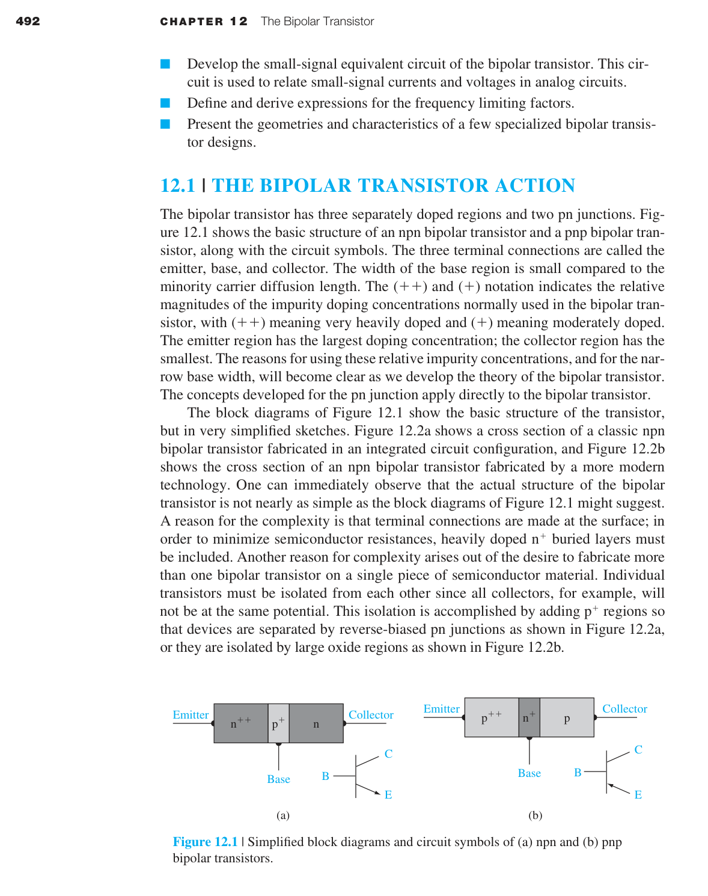
13.1 JFET 與 MESFET 的共通骨架——耗盡型場效的物理直覺
13.1.1 基本 pn JFET 操作
圖 13.2 展示了一個對稱型 n-channel pn JFET 的截面。兩個 p⁺ 閘極區域夾著一個 n 型通道。源極（source）是載子進入通道的端點，汲極（drain）是載子離開的端點，閘極（gate）是控制端。因為只有多數載子電子參與導電，這是一個多數載子元件。
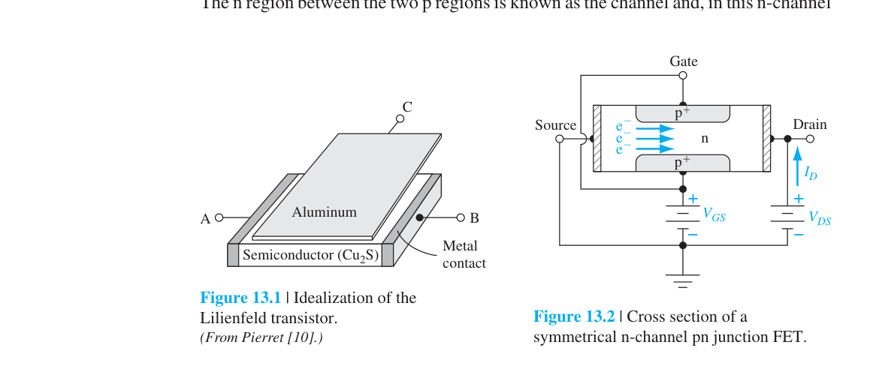
圖 13.3 總結了 JFET 操作的三種基本狀態。當 $V_{GS}=0$ 且施加一個小的正汲極電壓 $V_{DS}$ 時，n 通道本質上是一個電阻——$I_D$ 對 $V_{DS}$ 在小 $V_{DS}$ 下近似線性（圖 13.3a）。
當施加負的閘極電壓（對 n-channel 而言），gate-to-channel 的 p⁺n 接面進入反偏。空乏區開始從兩側向通道中央擴張，通道的有效截面積減小，電阻增大。$I_D$–$V_{DS}$ 曲線在小 $V_{DS}$ 下的斜率下降——如圖 13.3b 所示。這就是通道電導調變（channel conductance modulation）——場效現象的核心。閘極每增加 1 V 反偏，空乏區向通道內推進的距離由 $h \\propto \\sqrt{V_{bi} - V_{GS}}$ 決定。
如果負閘極電壓夠大，兩側的空乏區在通道中央相遇——整條通道被空乏區填滿。這個條件稱為夾止（pinchoff），如圖 13.3c。此時源極和汲極被空乏區隔離，$I_D \\approx 0$。注意：pinchoff 發生在 $V_{DS} \\approx 0$ 時——這是閘極單獨造成的夾止。
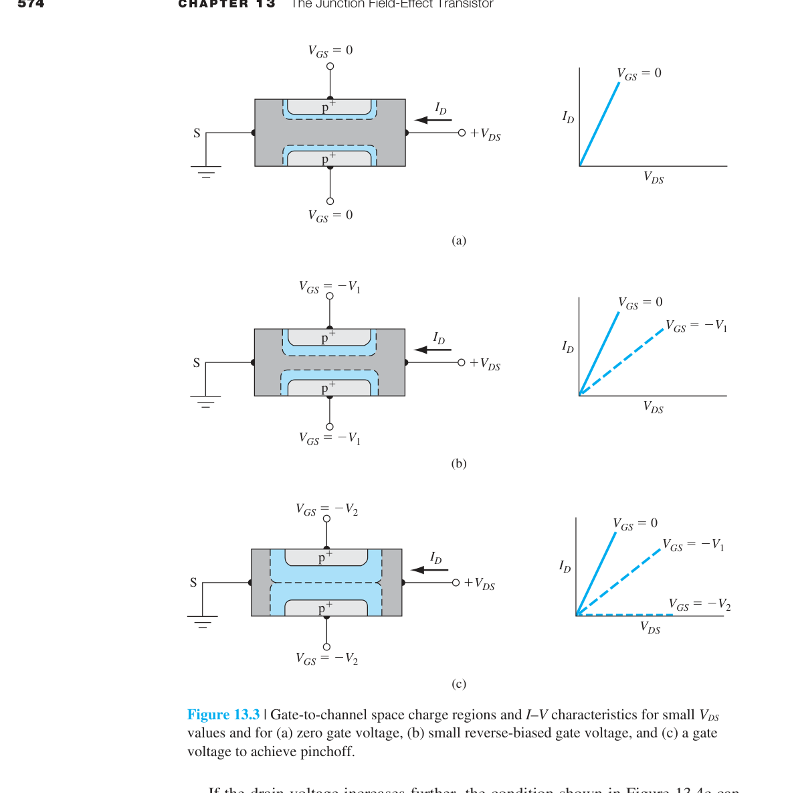
JFET 是 normally-on（常開）元件：$V_{GS}=0$ 時通道導通，需要施加反向閘極偏壓來關閉它。這就是 depletion-mode（空乏型）。MOSFET 則通常是 normally-off（常關）：$V_{GS}=0$ 時沒有通道，需要施加閘極電壓來建立反轉層。這兩種物理圖像不要混淆：JFET 是「掐窄」，MOSFET 是「建立」。
圖 13.4 展示了 $V_{GS}=0$ 但 $V_{DS}$ 變化的情況。當 $V_{DS}$ 增大時，通道中的電壓降使得 gate-to-channel 的接面在靠近汲極端受到更大的反偏——空乏區在汲極端比源極端更寬。通道變成一個漸窄的電阻，有效電阻沿通道長度變化。$I_D$–$V_{DS}$ 曲線從線性逐漸彎曲，斜率持續下降。
當 $V_{DS}$ 增大到使汲極端的空乏區剛好觸及通道的另一側時——這就是汲極端的夾止。對應的汲極電壓記為 $V_{DS}(\text{sat})$。對於 $V_{DS} \ge V_{DS}(\text{sat})$，元件進入飽和區（saturation region）。理想情況下，進一步增加 $V_{DS}$ 不會增加 $I_D$——元件表現得像一個恆流源。
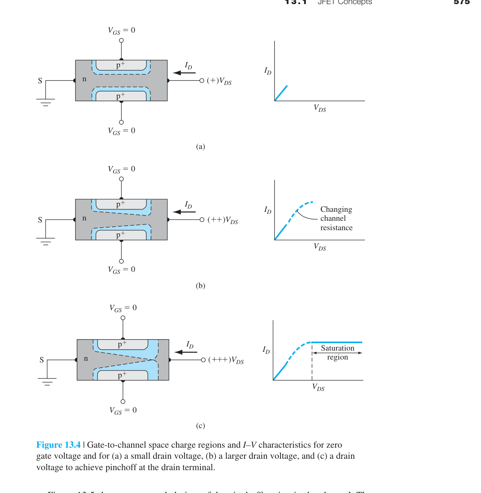
為什麼夾止後電流不降為零？圖 13.5 提供了答案。在夾止點，通道和汲極之間被一段長度為 $\Delta L$ 的空乏區隔開。電子從源極穿過 n 通道，然後被注入空乏區，在空乏區的強電場下被掃入汲極。只要 $\Delta L \ll L$，通道區的電場分布基本不變，$I_D$ 維持在 $V_{DS}(\text{sat})$ 時的值。載子一旦進入汲極區，$I_D$ 就與 $V_{DS}$ 無關——這就是恆流行為的物理圖像。
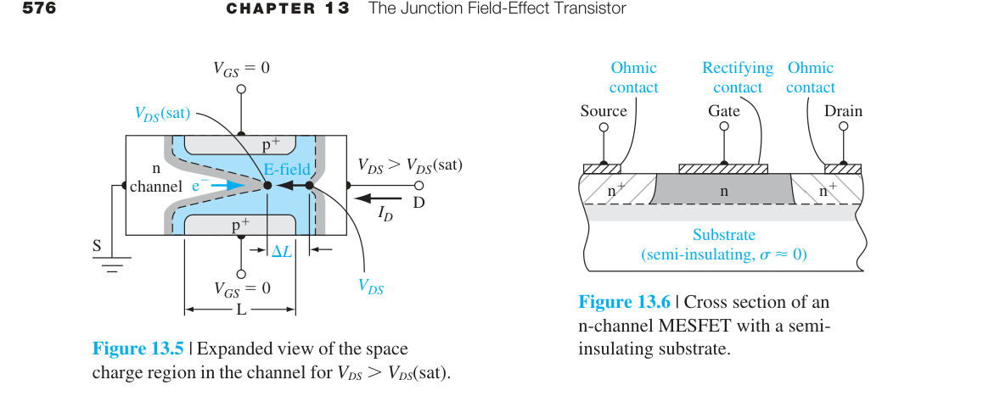
「夾止」（pinchoff）這個詞容易讓人誤以為通道物理上被切斷了。實際上，夾止指的是空乏區在某一點將通道截面擠壓到幾乎為零——但電流仍然可以通過。載子不是「擠過」夾止點，而是在夾止點之前就被電場加速，以漂移方式穿過空乏區到達汲極。夾止是電流飽和的觸發條件，不是電流的終止。
13.1.2 基本 MESFET 操作
MESFET（MEtal-Semiconductor Field-Effect Transistor）用蕭特基能障取代 pn 接面作為閘極。雖然 MESFET 也可以在矽上製造，但它通常與 GaAs 或其他化合物半導體聯繫在一起。圖 13.6 展示了一個 GaAs MESFET 的截面：一層薄薄的磊晶 GaAs 作為主動區，下面是半絕緣（semi-insulating）GaAs 基板——透過摻鉻（Cr）達到 $\sim 10^9\ \Omega\text{-cm}$ 的電阻率。
MESFET 的優勢來自三個方面：① GaAs 的電子遷移率遠高於 Si（$\sim 8500$ vs $\sim 1350$ cm²/V-s），通道傳輸時間更短，速度更快；② 半絕緣基板大幅減少了寄生電容；③ 相較於需要形成 pn 接面的 JFET，MESFET 的製程更簡單。
在圖 13.6 的 MESFET 中，反偏的 gate-to-source 電壓在金屬閘極下方感應出空乏區，調變通道電導——機制與 pn JFET 完全相同。當空乏區延伸到基板時，同樣發生 pinchoff。這也是一個耗盡型元件。
如果我們把半絕緣基板視為本質材料，圖 13.7 展示了 substrate–channel–metal 結構在零偏壓下的能帶圖。通道和基板之間、通道和金屬之間都存在位能障壁——多數載子電子被侷限在通道區內。這種由能帶不連續形成的自然載子侷限，使 GaAs MESFET 的通道傳輸效率遠高於同尺寸的 Si JFET。
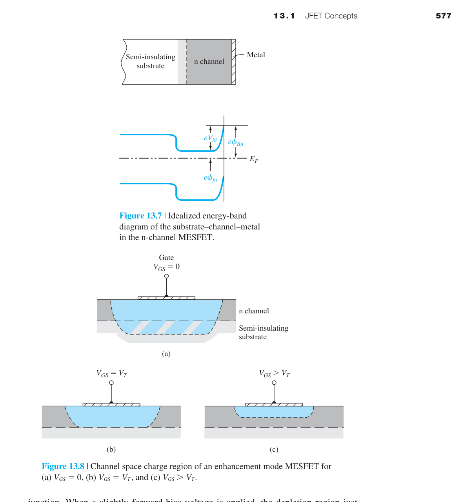
增強型 MESFET
圖 13.8 展示了另一種重要的 MESFET 變體——增強型（enhancement mode）MESFET。在 $V_{GS}=0$ 時，通道厚度小於零偏壓空乏區寬度——通道在零偏壓下已經被夾止。要打開通道，必須施加順向偏壓來縮小空乏區。這和 depletion-mode 剛好相反：增強型是 normally-off，需要正閘極電壓來開啟。
增強型 n-channel MESFET 的閾值電壓 $V_T$ 為正（對比 depletion-mode 的負 $V_p$）。由於順向偏壓不能太大（否則會有顯著的閘極電流），增強型 MESFET 的輸出電壓擺幅很小——但它的優勢是閘極和汲極可以使用相同極性的電壓，簡化電路設計。
| 元件 | 閘極機制 | 通道來源 | $V_{GS}=0$ 狀態 | 典型優勢 |
|---|---|---|---|---|
| pn JFET | pn 接面反偏 | 預先摻雜的導電通道 | 導通（耗盡型） | 模型乾淨、低雜訊 |
| MESFET | 金屬-半導體勢壘（蕭特基） | 預先存在的高遷移率通道 | 導通或截止 | 適合 III-V 高頻元件 |
| MOSFET | MOS 電容與反轉層 | 由閘極建立通道 | 通常截止（增強型） | 超大規模整合 |
JFET 和 MESFET 共享同一個物理骨架：閘極透過空乏區來「掐窄」已存在的通道。MOSFET 則透過反轉層來「建立」通道。在推導 I-V 關係時，JFET/MESFET 的起點是「通道截面積隨位置變化」，MOSFET 的起點是「反轉層電荷密度隨位置變化」。這兩條推導路徑雖然最終都給出 $I_D \propto (V_{GS}-V_T)^2$，但它們背後的物理假設完全不同。
13.2 元件特性——pinchoff、I-V 推導、與 transconductance
13.2.1 內部夾止電壓
要定量描述 JFET，第一個關鍵參數是內部夾止電壓 $V_{p0}$。考慮圖 13.10 的單側 n-channel pn JFET：通道的金屬學厚度為 $a$，空乏區寬度為 $h$。假設 $V_{DS}=0$，使用突變空乏近似（這個近似直接沿用 Ch7 的 pn 接面理論）：
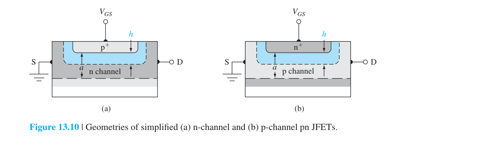
其中 $V_{GS}$ 是閘極-源極電壓（對 n-channel 反偏為負），$V_{bi}$ 是內建電位。當 $h = a$ 時達到夾止——空乏區填滿整個通道。此時跨接面的總電位定義為內部夾止電壓 $V_{p0}$：
$V_{p0}$ 定義為正量——它代表達到夾止所需的總接面電位（內建電位 + 外加反偏）。注意 $V_{p0}$ 不是閘極電壓本身。實際的夾止電壓 $V_p$（閘極-源極電壓以達到夾止）由下式給出：
對於 n-channel depletion-mode JFET，$V_{p0} > V_{bi}$，因此 $V_p$ 為負——直覺上合理：需要施加負的閘極電壓來反偏接面以達到夾止。
假設 Si n-channel JFET，$T=300$ K：$N_a = 10^{18}$ cm⁻³，$N_d = 10^{16}$ cm⁻³，$a = 0.75$ μm。
Step 1: $V_{bi} = V_t \ln(N_a N_d / n_i^2) = 0.0259 \ln(10^{18}\cdot 10^{16} / (1.5\times 10^{10})^2) = 0.814$ V
Step 2: $V_{p0} = \frac{e a^2 N_d}{2\epsilon_s} = \frac{(1.6\times 10^{-19})(0.75\times 10^{-4})^2(10^{16})}{2(11.7)(8.85\times 10^{-14})} = 4.35$ V
Step 3: $V_p = V_{bi} - V_{p0} = 0.814 - 4.35 = -3.54$ V
這表示要在閘極施加至少 $-3.54$ V 才能完全夾止這個 JFET 的通道。
對於 p-channel JFET（圖 13.10b），空乏區寬度公式變為 $h = \sqrt{2\epsilon_s(V_{bi} + V_{GS})/(eN_a)}$（$V_{GS}$ 對反偏為正），$V_{p0} = e a^2 N_a / (2\epsilon_s)$，而 $V_p = V_{p0} - V_{bi}$（正量）。p-channel 元件的頻率通常低於 n-channel，因為電洞遷移率較低。
圖 13.11 展示了 $V_{DS} \neq 0$ 時通道的幾何形狀。通道中的電位 $V(x)$ 隨位置變化，因此空乏區寬度也沿通道變化。在源極端（$x=0$），空乏區寬度 $h_1$ 僅由 $V_{GS}$ 決定；在汲極端（$x=L$），額外的通道電位 $V_{DS}$ 使反偏增強：
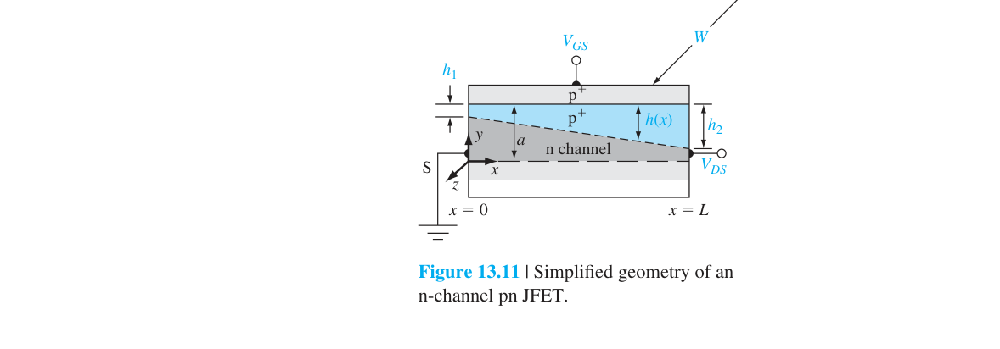
在汲極端達到夾止的條件是 $h_2 = a$。此時 $V_{DS} = V_{DS}(\text{sat})$：
$V_{DS}(\text{sat})$ 隨著反偏閘極電壓的增大（$|V_{GS}|$ 增大）而減小——因為閘極反偏已經先將空乏區向通道推進了，所以只需要較小的汲極電壓就能在汲極端達到夾止。
13.2.2 理想 DC 電流-電壓關係——耗盡型 JFET
JFET 的 I-V 推導起點是歐姆定律。考慮圖 13.11 中通道在位置 $x$ 處的微分電阻：
其中 $W$ 是通道寬度，$h(x)$ 是位置 $x$ 處的空乏區寬度。通道中各處的電流 $I_{D1}$ 守恆，所以微分壓降為 $dV(x) = I_{D1}\,dR$。空乏區寬度 $h(x)$ 與通道電位 $V(x)$ 的關係來自 pn 接面公式：
將 $V(x)$ 用 $h(x)$ 表示並微分：$dV = (eN_d h / \epsilon_s)\, dh$。代入歐姆定律並從源極端（$x=0$，$h=h_1$）積分到汲極端（$x=L$，$h=h_2$）：
利用 $h_1^2 = 2\epsilon_s(V_{bi}-V_{GS})/(eN_d)$ 和 $h_2^2 = 2\epsilon_s(V_{DS}+V_{bi}-V_{GS})/(eN_d)$，以及 $V_{p0} = e a^2 N_d/(2\epsilon_s)$，定義夾止電流 $I_{P1}$：
最終得到非飽和區的 I-V 關係：
在飽和區，將 $V_{DS} = V_{DS}(\text{sat}) = V_{p0} - (V_{bi} - V_{GS})$ 代入上式，得到：
Eq. (13.29) 和 (13.35) 雖然精確，但在手算中過於繁瑣。一個極佳的近似（廣泛用於 JFET 電路設計）是平方律：
其中 $I_{DSS}$ 是 $V_{GS}=0$ 時的飽和電流。圖 13.13 比較了精確解（Eq. 13.35）和平方律近似（Eq. 13.14）——兩者在整個 $V_{GS}$ 範圍內吻合得非常好。這個簡潔的平方律是 JFET 設計者最重要的工具。
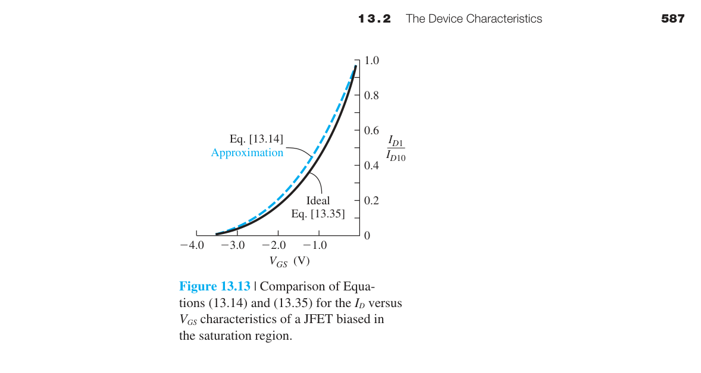
「當 $V_{GS}=0$ 時，通道最寬，電流最大（$=I_{DSS}$）。當你施加負的 $V_{GS}$，空乏區從兩側擠壓通道，有效寬度以 $(1 - V_{GS}/V_p)$ 的比例縮小。電流正比於通道截面積的平方（寬度 × 厚度都受影響），所以呈現 $(1 - V_{GS}/V_p)^2$ 的關係。當 $V_{GS}=V_p$（負值），通道被完全夾止，$I_D=0$。」
13.2.3 跨導（Transconductance）
跨導 $g_m$ 是 JFET 的電晶體增益——它衡量閘極電壓對汲極電流的控制能力：
使用平方律近似（Eq. 13.14）求導：
其中 $g_{m0} = 2I_{DSS}/|V_p|$ 是 $V_{GS}=0$ 時的最大跨導。$g_m$ 隨 $V_{GS}$ 變得更負而線性下降——當 $V_{GS} \to V_p$ 時 $g_m \to 0$。使用精確表達式，飽和區的跨導為：
使用前述 Si JFET 參數：$I_{P1} = 0.522$ mA，$V_{bi}=0.814$ V，$V_{p0}=4.35$ V。在 $V_{GS}=0$ 時：
$g_{ms}(\text{max}) = \frac{3(0.522)}{4.35} \left[ 1 - \sqrt{\frac{0.814}{4.35}} \right] = 0.204$ mA/V
這個值規一化為 mS/mm 是 RF 元件的常用指標。對於 $W=30$ μm：$g_{ms}/W = 6.8$ mS/mm。
13.2.4 MESFET 的特性——增強型與閾值電壓
MESFET 的基本 I-V 架構與 pn JFET 相同——差別只在於閘極是蕭特基接面。對於 n-channel MESFET，內部夾止電壓 $V_{p0} = e a^2 N_d/(2\epsilon_s)$ 的定義不變。但內建電位 $V_{bi}$ 不再是 pn 接面的 $V_t\ln(N_a N_d/n_i^2)$，而是蕭特基能障高度 $\phi_{Bn}$ 減去 $\phi_n = V_t\ln(N_c/N_d)$：$V_{bi} = \phi_{Bn} - \phi_n$。
在討論 MESFET（尤其是增強型）時，通常使用閾值電壓 $V_T$ 代替夾止電壓 $V_p$：
對於 n-channel 耗盡型：$V_T < 0$（負閾值，等同於 $V_p$）；對於增強型：$V_T > 0$（正閾值——需要順向偏壓來建立通道）。
增強型元件的飽和電流可寫成類似 MOSFET 的形式。當 $V_{GS} \gtrsim V_T$（剛開啟時），$(V_{GS}-V_T) \ll V_{p0}$，可以做泰勒展開：
因此可以寫成與 MOSFET 相同的形式：
其中 $k_n$ 稱為傳導參數。跨導為 $g_{ms} = 2k_n(V_{GS} - V_T)$——同樣與 MOSFET 的形式一致。
n-channel GaAs MESFET，$\phi_{Bn}=0.89$ V（金接觸），$N_d = 2\times 10^{15}$ cm⁻³，目標 $V_T = +0.25$ V。
$\phi_n = 0.0259 \ln(4.7\times 10^{17}/2\times 10^{15}) = 0.141$ V
$V_{bi} = 0.89 - 0.141 = 0.749$ V
$V_{p0} = V_{bi} - V_T = 0.749 - 0.25 = 0.499$ V
$a = \sqrt{\frac{2\epsilon_s V_{p0}}{eN_d}} = \sqrt{\frac{2(13.1)(8.85\times 10^{-14})(0.499)}{(1.6\times 10^{-19})(2\times 10^{15})}} = 0.601$ μm
增強型 MESFET 需要窄通道和低摻雜——這對製程精度要求很高。
13.3–13.4 非理想效應、小訊號模型與頻率限制
13.3.1 通道長度調變
在理想 JFET 的飽和區中，$I_D$ 與 $V_{DS}$ 無關。實際上，當 $V_{DS} > V_{DS}(\text{sat})$ 時，夾止點向源極方向移動——有效通道長度從 $L$ 縮短為 $L' = L - \frac{1}{2}\Delta L$（見圖 13.5）。因為 $I_D \propto 1/L$，通道變短使得電流隨 $V_{DS}$ 增大而上升——這就是通道長度調變。
修正後的汲極電流可寫成：
其中 $\lambda$ 是通道長度調變參數——與 MOSFET 的 Early 效應完全類比。由此可定義汲極輸出電阻：
Si JFET：$L=10$ μm，$N_d=3\times 10^{15}$ cm⁻³，$I_D=4.0$ mA。當 $V_{DS}$ 從 $V_{DS}(\text{sat})+2.0$ V 增加到 $V_{DS}(\text{sat})+2.5$ V：$\Delta L$ 從 0.929 μm 增加到 1.04 μm。$I_D$ 從 $4.0\times(10/9.54)=4.19$ mA 增加到 $4.0\times(10/9.48)=4.22$ mA。$r_{ds} = 0.5/(0.03\text{ mA}) \approx 18.9$ kΩ——遠小於理想的無限大。
對於短通道元件（$L \sim 1$ μm 的 GaAs MESFET），通道長度調變的相對影響更大——$\Delta L$ 和 $L$ 變得可比。這是短通道元件飽和區斜率變大的主要原因。
13.3.2 速度飽和效應（Velocity Saturation）
Ch5 中我們學到，載子漂移速度在高電場下會飽和。在短通道 JFET 中，靠近汲極端的通道極窄——根據電流連續性，載子速度必須增大。當電場超過臨界值（Si: $\sim 10^4$ V/cm，GaAs: $\sim 3\times 10^3$ V/cm），載子達到飽和速度 $v_{\text{sat}}$。
當速度飽和發生時，通道在汲極端有一個飽和空乏區厚度 $h_{\text{sat}}$，飽和電流變為：
速度飽和的後果：① $V_{DS}(\text{sat})$ 比無速度飽和時更小；② $I_D(\text{sat})$ 也更小；③ $g_m$ 下降。對於 GaAs MESFET，速度飽和尤其重要——GaAs 的 $v_{\text{sat}} \sim 1\times 10^7$ cm/s，且其速度-電場曲線有負微分遷移率區，進一步複雜化了短通道行為。
13.3.3 次閾值與閘極電流效應
當閘極電壓低於夾止/閾值時，JFET 中仍然存在微小的汲極電流——稱為次閾值電流（subthreshold current）。GaAs MESFET 的三個操作區域清楚地說明了這個過渡：
① 正常通道閘控區（$V_{GS} > V_T$）：$I_D$ 隨 $V_{GS}$ 二次方變化（平方律）。② 次閾值區（$V_{GS}$ 略低於 $V_T$）：$I_D$ 隨 $V_{GS}$ 指數衰減——這是因為靠近夾止時，突變空乏近似不再準確；空乏區邊緣不是銳利的，而是有一個過渡區，允許微小的電流穿過。③ 閘極漏電區（$V_{GS}$ 遠低於 $V_T$）：$I_D$ 達到最小值後緩慢上升——這是反偏閘極接面的漏電流，來自空乏區內的產生電流（SRH 機制，Ch6/Ch8）。
次閾值電流在低功率電路中必須被考慮——它設定了元件可以被「關閉」到什麼程度。
13.4.1 小訊號等效電路
圖 13.16 展示了 JFET 的完整小訊號等效電路。在中低頻下，可以簡化為理想形式——汲極電流的小訊號分量僅由 $g_m v_{gs}$ 決定：
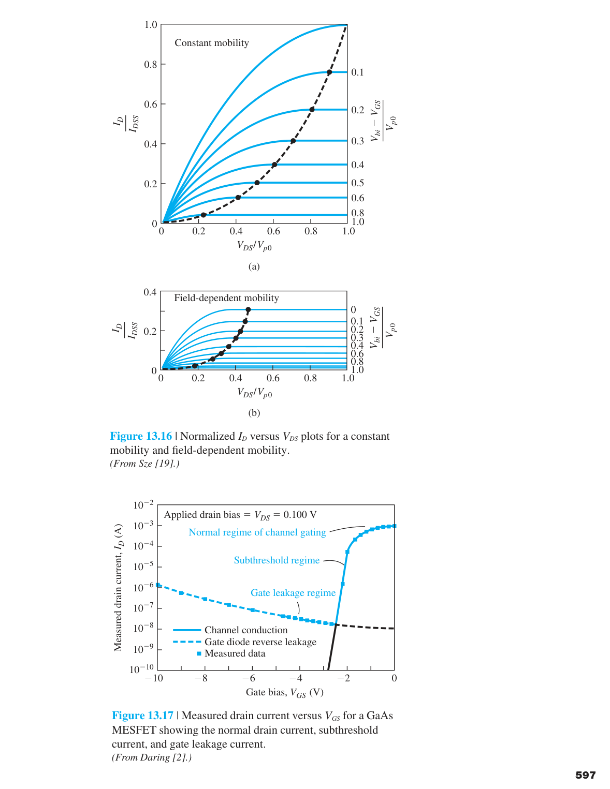
其中 $g_m$ 由 DC 偏壓點決定。當考慮源極串聯電阻 $r_s$ 時，有效跨導會衰減：
$r_s$ 來自源極區域的半導體電阻和接觸電阻。對於薄通道元件（$a \sim 1$ μm），源極串聯電阻可以很大（∼kΩ），顯著降低有效增益。
• $g_m$（跨導）：閘極控制汲極電流的能力。$g_m \propto \sqrt{I_D}$（平方律區）。
• $r_{ds}$（汲極輸出電阻）：飽和區中 $I_D$ 對 $V_{DS}$ 的敏感度，來自通道長度調變。
• $C_{gs}$（閘-源電容）：反偏接面的空乏區電容。$C_{gs} \propto 1/\sqrt{V_{bi} - V_{GS}}$。
• $C_{gd}$（閘-汲電容）：汲極端的接面電容，通常小於 $C_{gs}$。在高頻時透過 Miller 效應影響輸入阻抗。
• $r_{gs}$（閘-源電阻）：反偏接面的微分電阻——通常極大（∼GΩ），在等效電路中經常被忽略。
13.4.2 頻率限制因素與截止頻率 $f_T$
JFET 的速度受兩個物理因素限制。第一個是通道傳輸時間：載子從源極到汲極所需的時間。對 $L=1$ μm 且載子以飽和速度 $v_s \approx 10^7$ cm/s 行進：
這個時間通常不是瓶頸——除非在非常高頻（$>100$ GHz）的元件中。
第二個限制因素——通常是主導因素——是電容充電時間。輸入電流 $I_i$ 必須對 $C_{gs}$ 和 $C_{gd}$ 充電。定義 $C_G = C_{gs} + C_{gd}$，當輸入電流的幅值等於理想輸出電流 $g_m V_{gs}$ 時，達到截止頻率 $f_T$：
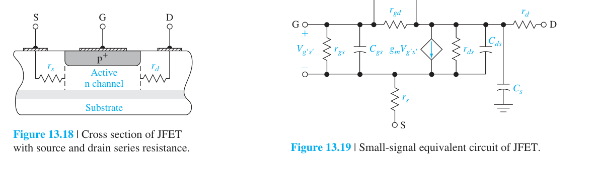
使用最大可能跨導 $g_m(\text{max}) = e\mu_n N_d W a / L$ 和最小閘極電容 $C_G(\text{min}) = \epsilon_s W L / a$，得到 $f_T$ 的物理表達式：
Si JFET：$\mu_n = 1000$ cm²/V-s，$N_d = 10^{16}$ cm⁻³，$a = 0.6$ μm，$L = 5$ μm：
$f_T = \frac{(1.6\times 10^{-19})(1000)(10^{16})(0.6\times 10^{-4})^2}{2\pi(11.7)(8.85\times 10^{-14})(5\times 10^{-4})^2} = 3.54$ GHz
GaAs 的對比：$\mu_n = 6500$ cm²/V-s，$N_d = 3\times 10^{15}$ cm⁻³，$a = 0.5$ μm，$L = 1$ μm：
$f_T \approx 107$ GHz——GaAs 的高遷移率和短通道使 $f_T$ 提高近 30 倍！
這就是為什麼 GaAs MESFET 主宰了微波和毫米波應用。
$f_T \propto \mu_n a^2 / L^2$。要提升 $f_T$：① 使用高遷移率材料（GaAs > Si，InGaAs > GaAs）；② 減小通道長度 $L$（平方關係——縮小一半，$f_T$ 提高四倍）；③ 增大通道厚度 $a$（但要注意 $V_p$ 也會增大，所以有取捨）。HEMT（下節）將這三項同時優化——高遷移率通道 + 極短閘極 + 最佳化的能帶工程。
13.5 HEMT——異質接面與高遷移率通道的革命
13.5.1 量子井結構與二維電子氣
當頻率需求、功率容量、和低雜訊性能不斷提升時，GaAs MESFET 被推到了設計極限。傳統元件中，通道區的載子和摻雜離子共存於同一區域——這導致離子化雜質散射（ionized impurity scattering），降低遷移率，劣化元件性能。
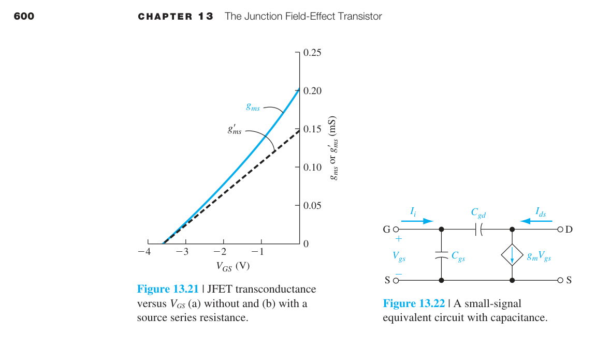
在熱平衡下，電子從寬能隙的 N-AlGaAs 流向 GaAs，落入導帶的位能井中，被侷限在一個極薄的層（約 80 Å）內。這些電子在垂直於界面的方向（$z$ 方向）被量子化——只能佔據分立的次能帶 $E_0, E_1, \ldots$。但在平行於界面的方向（$x$–$y$ 平面），電子完全自由移動——這就是二維電子氣（2DEG, Two-Dimensional Electron Gas）。
在 3D 塊材中，電子可以自由地在三個方向運動，散射機制複雜。在 2DEG 中，電子在 $z$ 方向的運動被凍結——只剩下 $x$–$y$ 平面內的二維運動。這意味著：① 狀態密度變為階梯函數（而非 3D 的拋物線狀），改變了散射機率；② 雜質離子在 AlGaAs 層中，與 GaAs 通道中的電子空間分離——庫侖散射大幅降低。結果：300 K 下遷移率可達 8500–9000 cm²/V-s，遠高於相似摻雜濃度的 GaAs MESFET（$<5000$ cm²/V-s）。
為了進一步減少雜質散射，可以在摻雜 AlGaAs 和未摻雜 GaAs 之間插入一層未摻雜的 AlGaAs 間隔層（spacer layer）。圖 13.24 展示了增加間隔層後對能帶彎曲和 2DEG 濃度的影響——間隔層增加載子-離子分離距離，遷移率提高，但位能井中的電子濃度會略為下降。
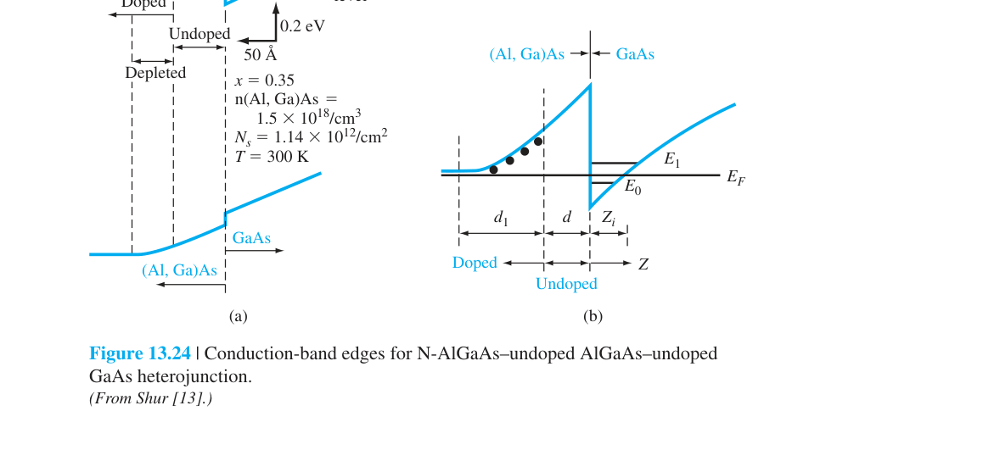
透過分子束磊晶（MBE）技術，可以精確控制各層的厚度和摻雜——甚至可以堆疊多個通道層（多層調變摻雜異質結構），等效於增加通道電子密度，提升電流能力。
13.5.2 HEMT 的電晶體性能
典型的「正常」AlGaAs-GaAs HEMT 結構中，N-AlGaAs 層透過未摻雜 AlGaAs 間隔層與未摻雜 GaAs 分離。蕭特基接觸做在 N-AlGaAs 上形成閘極。源極和汲極的歐姆接觸穿過 AlGaAs 直接連到 2DEG 通道。
閘極電壓透過蕭特基空乏區控制 2DEG 的濃度：$V_G=0$ 時，GaAs 中的導帶邊緣低於費米能階——2DEG 濃度高，元件導通。當施加負閘極電壓時，能帶被拉高——GaAs 的導帶邊緣移到費米能階之上——2DEG 幾乎消失，元件截止。
使用電荷控制模型（charge control model），2DEG 的薄片載子濃度 $n_s$ 可以表示為：
其中 $d = d_d + d_i$ 是摻雜層 + 間隔層的總厚度，$\Delta d \approx 80$ Å 是修正因子，$V_{\text{off}}$ 是截止電壓：
使用漸進通道近似，HEMT 的 I-V 特性與 JFET/MESFET 非常相似。在低 $V_{DS}$ 的非飽和區：
當載子達到速度飽和時：
HEMT 的跨導通常以 mS/mm 規一化。300 K 下的典型值為 250 mS/mm——遠大於 pn JFET 或 MESFET。增強型 HEMT 的計算與實驗 I-V 曲線顯示電流可達 25 mA 以上。
N-Al₀.₃Ga₀.₇As / intrinsic GaAs 異質接面：$N_d = 10^{18}$ cm⁻³，摻雜層厚度 $d_d = 500$ Å，間隔層 $d_i = 20$ Å，$\phi_B = 0.85$ V，$\Delta E_c/q = 0.22$ V。
$V_{p2} = \frac{(1.6\times 10^{-19})(10^{18})(500\times 10^{-8})^2}{2(12.2)(8.85\times 10^{-14})} = 1.85$ V
$V_{\text{off}} = 0.85 - 0.22 - 1.85 = -1.22$ V（負值→耗盡型 MODFET）
$n_s(V_g=0) = \frac{(12.2)(8.85\times 10^{-14})}{(1.6\times 10^{-19})(500+20+80)\times 10^{-8}}[0 - (-1.22)] = 1.37 \times 10^{12}$ cm⁻²
這是一個典型的 2DEG 濃度——約為 Si MOSFET 反轉層的 10 倍。
優勢：極高的遷移率和速度（$f_T > 100$ GHz 在 $L=0.25$ μm）、低雜訊（在 35 GHz 仍保持合理增益）、低功耗（比 ECL 邏輯低三個數量級）。
限制：① 異質接面製程複雜，需要 MBE 或 MOCVD 技術；② 當正閘極電壓過大時，AlGaAs 的導帶會降到費米能階以下，形成平行導通路徑（bypass），閘極失去對 2DEG 的控制；③ 多通道 HEMT 中各通道的閾值電壓不同，跨導不會線性放大。
應用：5.5 GHz 正反器、35 GHz 低雜訊放大器、毫米波通訊、衛星接收器。HEMT 代表了場效電晶體的巔峰——速度、功耗、雜訊的同時最優化。
本章總結——JFET/MESFET/HEMT 的物理全景
- 基本操作哲學：JFET/MESFET 是 depletion-mode 場效元件——閘極不是創造通道，而是用反偏接面的空乏區掐窄已存在的通道。這是與 MOSFET（反轉層建立通道）的根本差異。
- 內部夾止電壓 $V_{p0}$ 與夾止電壓 $V_p$：$V_{p0} = e a^2 N_d / (2\epsilon_s)$ 是夾止時的總接面電位（正量）。$V_p = V_{bi} - V_{p0}$ 是閘極需施加的電壓（n-channel depletion-mode 為負）。這兩個公式直接來自 Ch7 的 pn 接面空乏區理論——$h = \sqrt{2\epsilon_s(V_{bi}-V_{GS})/(eN_d)}$。
- 飽和電壓 $V_{DS}(\text{sat})$：$V_{DS}(\text{sat}) = V_{p0} - (V_{bi} - V_{GS})$。在汲極端達到夾止後元件進入飽和——電流不再隨 $V_{DS}$ 增大（理想情況）。
- I-V 平方律：$I_D = I_{DSS}(1 - V_{GS}/V_p)^2$。這是全章最重要的公式——精確推導過程從歐姆定律出發，積分通道中的微分壓降，最終得到 $(1 - V_{GS}/V_p)^2$ 的簡潔形式。背後物理：通道截面積隨閘極偏壓二次方縮小。
- 跨導 $g_m$：$g_m = g_{m0}(1 - V_{GS}/V_p)$，線性下降。最大跨導 $g_{m0} = 2I_{DSS}/|V_p|$。跨導是 JFET 作為放大器的核心指標。
- 增強型 MESFET：$V_T = V_{bi} - V_{p0}$。當 $V_{p0} < V_{bi}$ 時 $V_T > 0$——normally-off 元件。$I_D \approx k_n(V_{GS} - V_T)^2$，形式與 MOSFET 完全相同。
- 通道長度調變：$I_D' \approx I_D(1 + \lambda V_{DS})$——$\Delta L$ 使有效通道長度縮短，電流上升。$r_{ds}$ 有限（∼kΩ 量級），在短通道元件中更顯著。
- 速度飽和：高電場下 $v \to v_{\text{sat}}$——$V_{DS}(\text{sat})$ 和 $I_D(\text{sat})$ 都變小，$g_m$ 下降。GaAs 元件中尤其重要。
- 小訊號等效電路：$i_{ds} = g_m v_{gs}$，$g_m' = g_m/(1 + g_m r_s)$。寄生電容 $C_{gs}$, $C_{gd}$ 限制高頻響應。
- 截止頻率 $f_T$：$f_T = g_m/(2\pi C_G) \propto \mu_n a^2 / L^2$。縮小 $L$ 是提升 $f_T$ 最有效的手段（平方關係）。GaAs MESFET 可達 ∼100 GHz。
- HEMT（高電子遷移率電晶體）：異質接面將載子（2DEG）與摻雜離子空間分離→離子化雜質散射最小化→遷移率大幅提升。$n_s$ 由電荷控制模型描述：$n_s \propto (V_g - V_{\text{off}})/(d + \Delta d)$。300 K 下 $g_m \sim 250$ mS/mm，$f_T > 100$ GHz。HEMT 是場效元件速度與雜訊性能的巔峰。
JFET 和 MOSFET 雖然物理機制不同（空乏區掐窄 vs 反轉層建立），但它們的飽和區 I-V 關係最終都收斂到平方律：$I_D \propto (V_{GS} - V_T)^2$。這不是巧合——它反映了場效控制的本質：橫向電場調變縱向電流的通道截面積。無論是空乏區還是反轉層，截面積都與 $(V_{GS} - V_T)$ 成正比，而電流正比於截面積 × 橫向電場——這就產生了平方律。理解這個統一性，你就真正掌握了場效電晶體的物理本質。
本章學習資源
推導、假設與章末診斷
方程式使用契約
- JFET/MESFET 平方律採一維 depletion approximation、漸變通道、均勻摻雜、常數遷移率與低場漂移。
- 閘極接面維持反偏且漏電忽略；MESFET 需以 Schottky 內建電位決定空乏寬度。
- Shockley 式 $I_D=I_{DSS}(1-V_{GS}/V_P)^2$ 主要描述飽和區，不適用線性區、崩潰或強通道長度調變。
- HEMT 的 2DEG 片電荷由異質接面能帶、極化與量子井共同決定，不能直接套均勻摻雜 JFET 通道。
中間推導：平方律來源
- 反偏接面空乏寬度 $w(y)\propto\sqrt{V_{bi}-V_G+V(y)}$，有效通道厚度隨汲極方向變窄。
- 局部電導與有效厚度成正比，$dV/dy=I/[q\mu N_DW a_{eff}(y)]$。
- 沿通道積分並在汲極端滿足 pinch-off 條件，得到飽和電流對閘極超額偏壓的平方關係。
- 以 $V_{GS}=0$ 的電流定義 $I_{DSS}$，化為 Shockley 式。
章末練習與概念診斷
pinch-off 後通道是否在整段消失？
否，只在汲極端附近夾止；載子仍被高場掃向汲極，電流進入飽和。
HEMT 高遷移率只因 GaAs 本身較快嗎？
不只如此；調變摻雜讓 2DEG 與離化雜質空間分離，大幅降低離化雜質散射。
延伸計算練習
完成上方診斷後，請在不查公式的情況下重建代表推導，並改變一個參數檢查極限行為。更多含數值與解答的題目：本章完整習題頁。